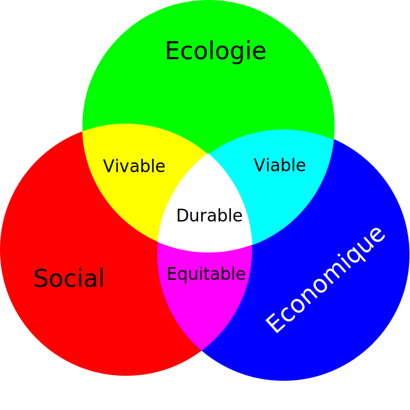

IT IS SUSTAINABLE
Nos choix aideront la planète
Plan
- Context
- Architecture
- Ops
- Dev
- Action
Règles
- Interactivité ❤️
- Pas de partage des slides
- Mise à disposition d'une liste de lecture
Corentin Jechoux
- Codeur
- Tech Lead
- Manager
- Formateur
- JAVA
- RUST
- HTML / CSS / JS
- NODE.JS
- Client léger
- Client lourd
- Batch
- Full stack
But
- Moins d’énergie
- Moins de ressources
- Impact faible sur l’humain et le non humain
Les 3 piliers du Développement Durable
Contexts
Réchauffement Global
Dérèglements climatiques locaux
37°5

Les 9 limites de la planète

Impact du numérique
80 %
Fabrication
Fabrication
20 %
Utilisation
Utilisation
Chiffres 2019
- 3 x l'emprunte carbone de la France ou de l'Angleterre
- 10 % de l'électricité produite dans le monde
- 4 % des emissions de GES
- 21 % du forfait GES annuel à cause du numérique
- üöÄ + 21 % des d√©chets num√©rique 2015-2020
Plus de chiffres
Que faisons nous dans le numérique ?
- Des logiciels
- Sur des ordinateurs

Métaux Rares

Recette
Boule de pain
Une bonne dose de farine
.
De l’eau
.
Un peu de levure
.
Une pincée de sel
.
De l’eau
.
Un peu de levure
.
Une pincée de sel
Ressources qui s'épuisent
From Cradle to Grave
- Extraction des matières premières
- Transport
- Assemblage
- Intégration
- Fin de vie : déchets ou recyclage / réutilisation
Equipements connectés à Internet
30 milliards
Dont :
- 3.6 milliards de smartphones
- 2 milliards d'ordinateurs
Impact d'un ordinateur portable ?
- 1 tonne de matières premières
- 200 kg GES
Effet Rebond
plus on améliore l'efficacité d'utiliser une ressource, plus sa consommation peut augmenter.
Architecture
Critères ?
Critères de sélections d'une architecture ?- Couverture fonctionnel
- Exigence non fonctionnelle : interopérabilité, sécurité, disponibilité
- Faisabilité
- Coût / Budget
Localisation Géographique

Vraiment ?
A-t-on vraiment besoin de cette fonctionnalité ?
Mise à jours
- Souvent l'occasion d'ajouter des fonctionnalité non nécessaire
- Système plus intelligent : exemple Eclipse Plateforme.
Synchro des photo de smartphone dans le Cloud
- 32 000 photos / secondes
- ➔ 100 000 disques dure / an
- ➔ 2,4 centrales nucléaires dédiés
Ops
Matériel
- Occasions / Reconditionnés
- ➔ allongement de la durée de vie
- ⚠️ consommation d'énergie
Cloud
- Bonne gestion des serveurs
- Bien choisir son fournisseur
- American Cloud Act ü뮂Äçüë©‚Äçü붂Äçüë¶
Scaling
- S'adapter à la charge (traffic)
- Pensons au "scaling down"
- Pensons à la mutualisation
- VM dédié si le traffic ~ identique
- Function / Lambda si la traffic est très variable
Shifting
Adapter l'execution selon le mix énergétique.

Temps de réponse
- Temps réelle vs Immédiateté
- Ne pas déployer plusieurs instances dans le monde pour se rapprocher des utilisateurs
- Cache / Offline
Réseaux mobile
- Plus les réseaux mobiles sont modernes plus ils polluent
- Privilégié le WI-FI, 20 x moins polluant que la 4G
Dev
Nouvelles features ?
+ étudier son impact sur le numérique
Build
- Stratégie de build ?
- Stratégie de stockage des artifacts
Les données
- A contre courant du /BIG DATA/ utiliser seulement les données nécessaires.
- Format et protocoles : SOAP, JSON, Protocol Buffer, Apache Thrift
- Bases de données
- Stratégie d'archivage
- Log
Site Web
- Pour une requête client/serveur, 80% de l'énergie consommé est au niveau du front-end
- Dynamique ? Statique ? Framework ?
- Archivage CMS
- Feuille de style pour l'impression
- HTTP2
- üí• MOBILE FIRST
üëà Exemple https://lowww.directory
Cache Web
- Permet de réduire les volumes de données échangés
- Configuration sur le serveur ou sur le navigateur
- üí• OFFLINE FIRST
3 cliques MAX
- Moins de réseaux
- Bon UX
- Bon SEO
Historique du code source
Doit-on garder un historique du code sur 10 ans ?
Log Bombing
log.info("Client is connecting with " + email);
Framework ?
- Vraiment besoin ?
- Bénéfice risque ?
- Quel % de classe je n'utilise pas dans le framework ?
Quelques principes d'Eco-conception
- Limiter le nombre de requêtes HTTP
- Attention aux autocomplete
- Sélecteur CSS efficace, simple, léger
- Font standard
- CSS et JS externalisé si ce sont des ressources partagés
- Tailles des images selon le device (au build)
- Lazy Loading des images
- Rendre un élément du DOM invisible si plusieurs propriétés sont modifiés
- Éviter animations CSS / JS
- JS : fonction anonyme si utiliser 1 seul fois
i++à remplacer par++i- Héberger les ressources sous un domaine sans cookies
Actions
On Mesure
- Référencement du matériel : son impact (9 limites de la planète) au cours de son cycle de vie.
- Eco Labels : EPEAT, TCO8, Blue Angel, Greenpeace "Guide to greener electronics"
- Souscrire à une solution de mesure global chez AWS, GCP, AZURE
- Energie : consommation et mix énergétique
- Temps de réponse, volumes des données
- € aussi la facture I.T.
- Hardware de nos clients (smartphone, ordinateur)
- Consommation CPU, RAM, Disque, IO, etc...
Analyse du cycle de vie - ACV
ISO 14040 et 14043
- Flux
- Equivalent CO2
- Power Usage Effectiveness PUE
- Mix Énergétique
Sobriété
- se recentrer sur l'essentiel
- Pas de monolithe, pas de superflue
- MOBILE FIRST
- OFFLINE FIRST
Communication environnementale
- Evite le Greenwashing
- ➔ ISO 14063
Questionnaire de satisfaction
et plus de ressources à lireMERCI
LIKEZ, COMMENTEZ, PARTAGEZ sur LES LINKEDIN.
N'hésitez pas à me suivre ou connecter nos réseaux LinkedIni